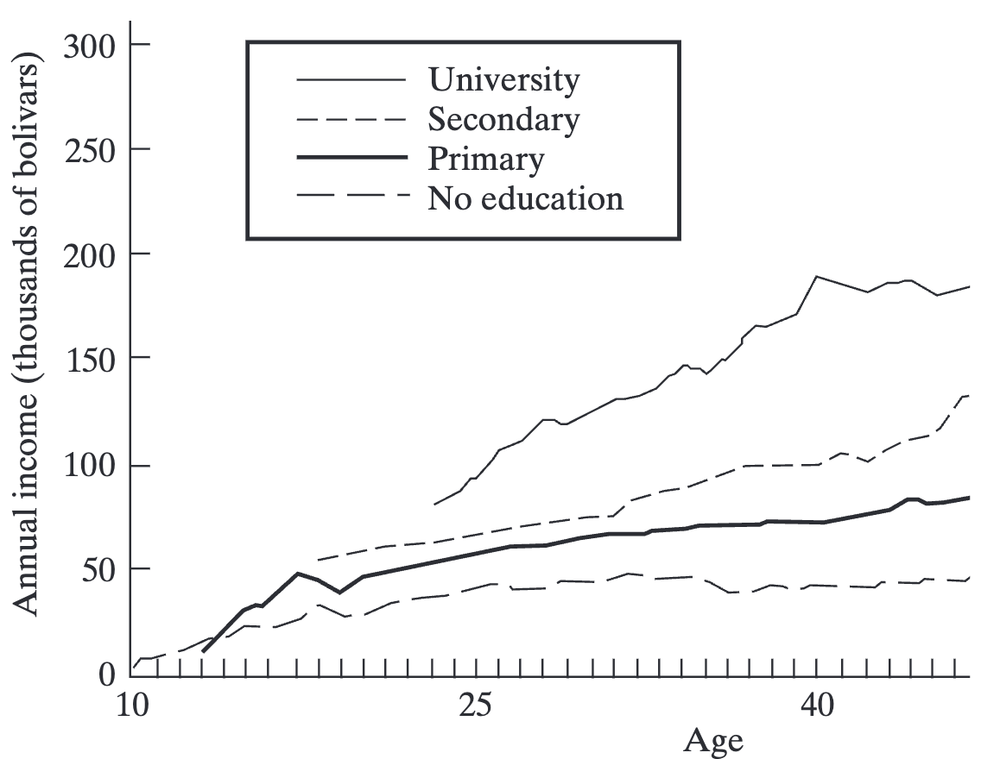
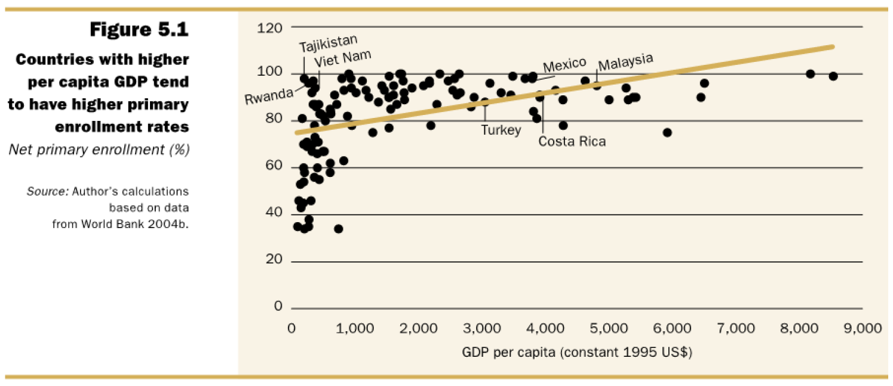
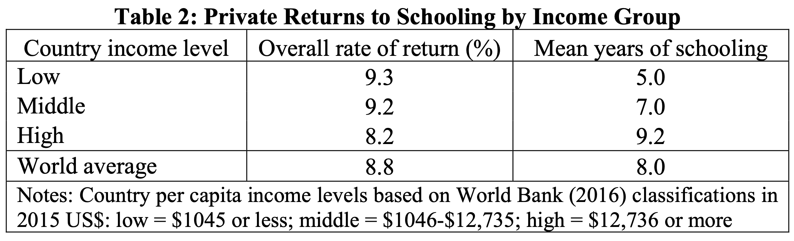
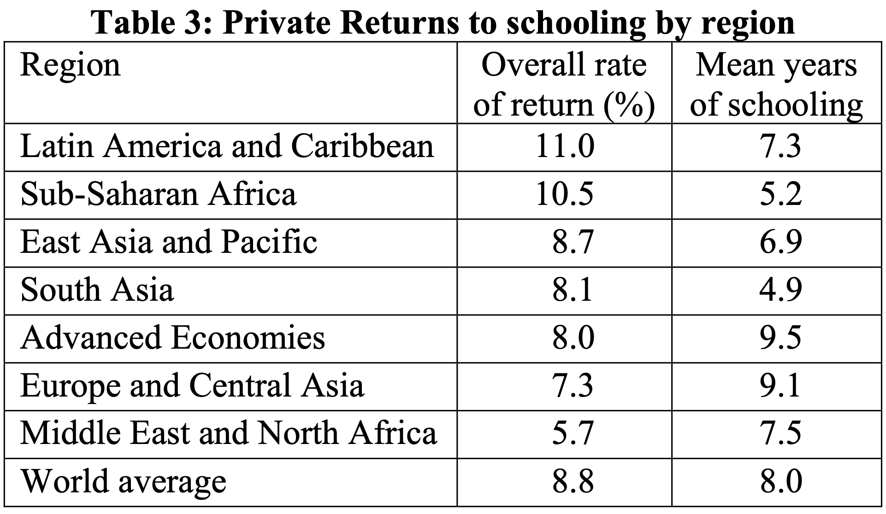
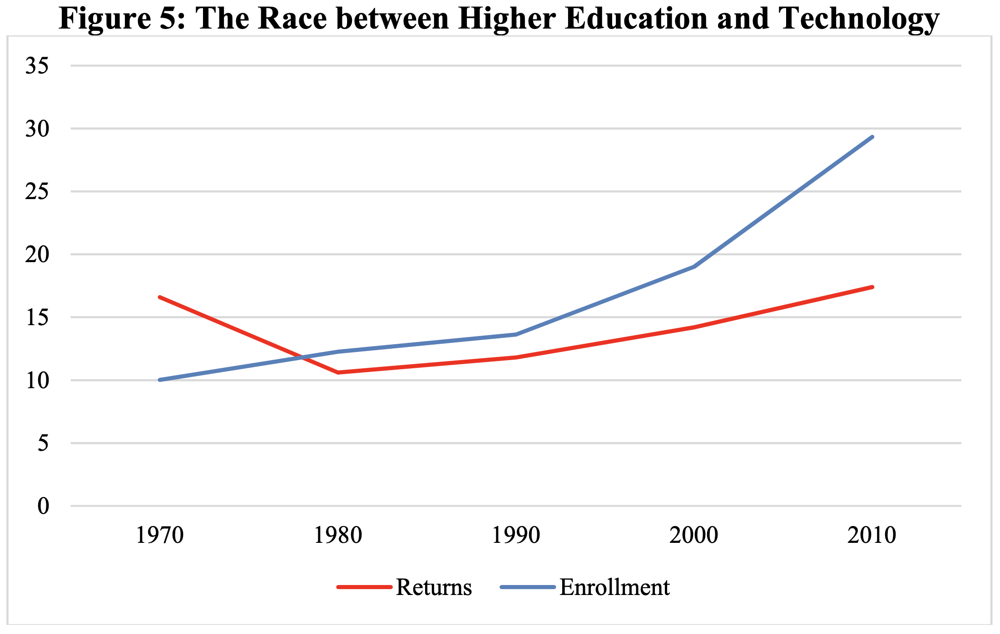
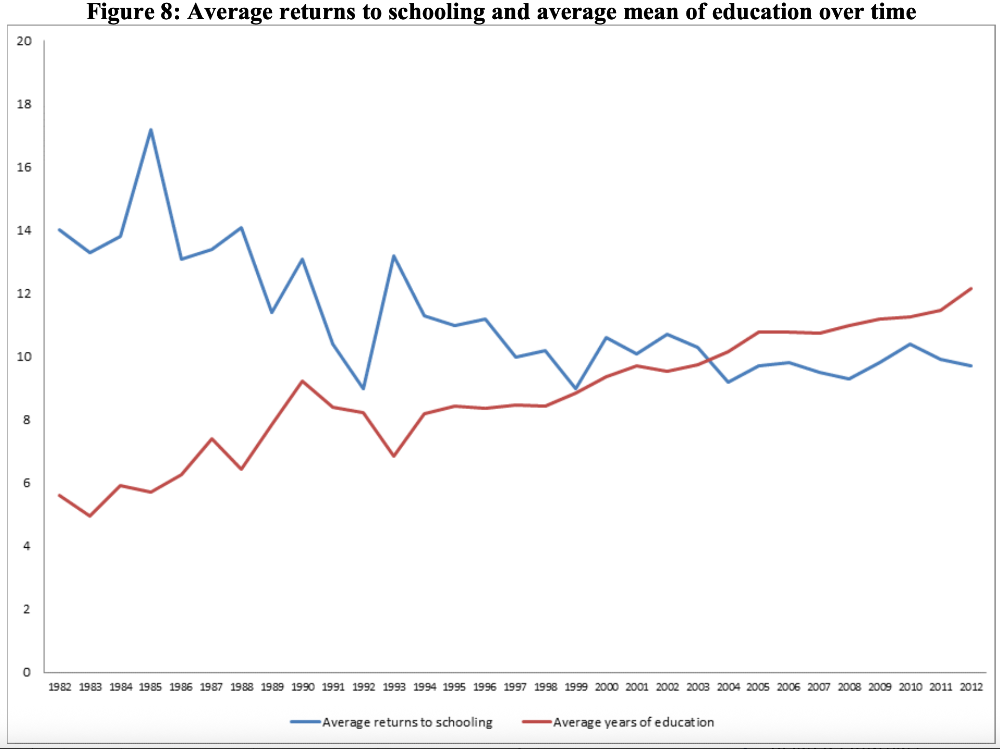
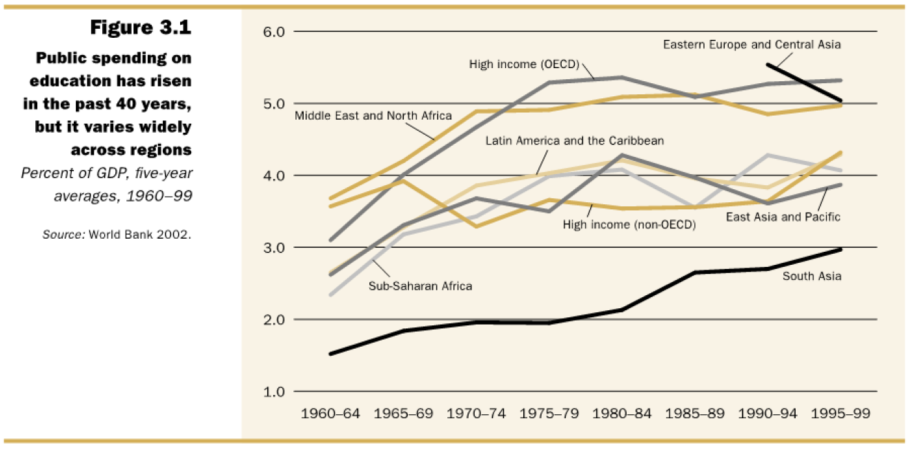
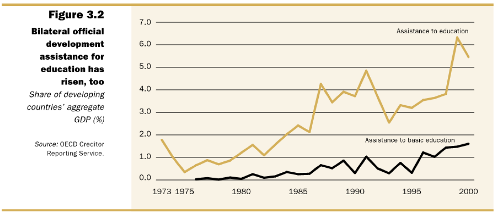
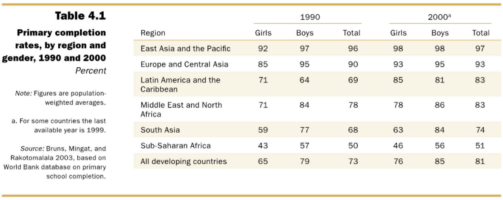
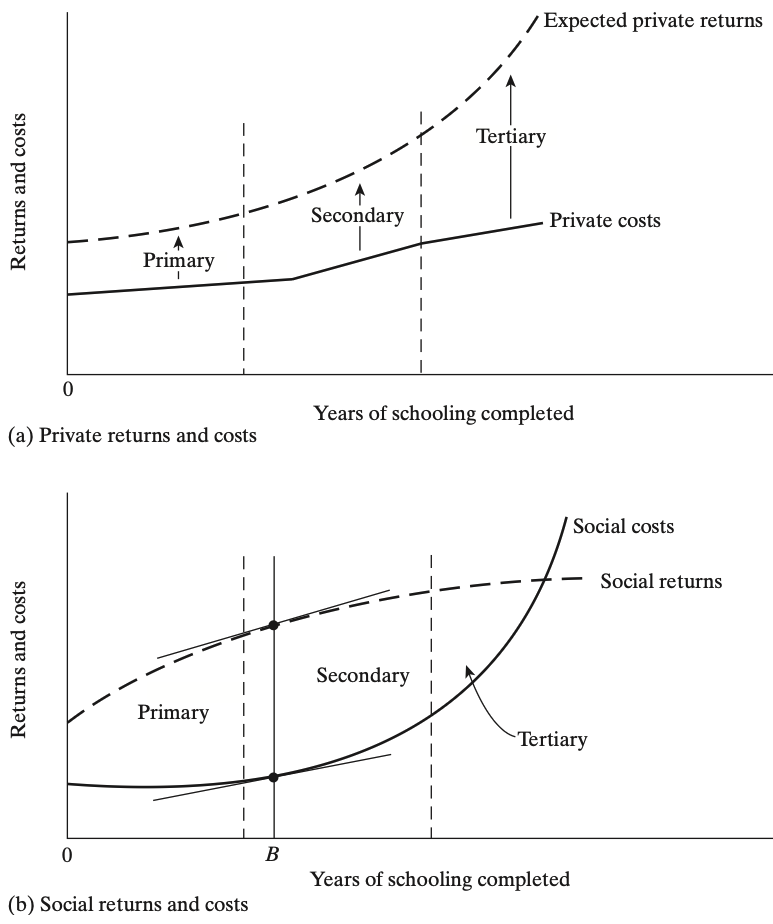

Human Capital - Health and Education
EC 390 - Development Economics
2025
Central Role of Education and Health
Education and Health
Education and Health are basic objectives of development
- A healthy and educated is desirable for growth
- Modern economies tend to produce healthy and educated inviduals
- Further, we can think of education and health as investments
- You invest in a university degree because it will pay off eventually
- You invest in eating healthy beacuse it will pay off eventually
- In developing countries, these investments can have large pay-offs
- But these pay-offs happen in the future
Education and Health
Education and Health
Greater incomes are associated with higher education levels
- More factors at play for low-income countries

Education and Health
Greater incomes are associated with higher education levels
- More factors at play for low-income countries

Education and Health - Regions
Education Interacting with Technology
Education Interacting with Technology
Human Capital Approach
Human Capital
Definition: Catch-all term we use in economics to refer to education, health, skills, and other human capacities that can raise productivity
Human capital can be acquired through investment
Education
Health care
Training, therapy, etc.
They affect productivity, income, happiness, and lifespan
We may not directly talk about education or health, but rather the human capital it creates
Complementarities
Health and Education investments have large complementarities
- If children are malnourished or have high mortality, education investment will not be as effective
- Poor health in children leads to:
- Low school attendance
- Less attention in class
- Lower lifetime earnings and returns to investment
- Poor health in children leads to:
- To effectively increase human capital, we need investments in both health and education simultaneously
Unfortunately, invetsments take considerable time to pay off
Invest Now, Returns Later

Invest Now, Returns Later
Investing in education means that we expect higher earnings in the future than we would have obtained otherwise
- These future income gains must be compared with the total costs incurred to understand it as an investment
- Education costs include direct costs:
- tuition costs
- books and uniforms
- And indirect costs:
- foregone income
Let’s Model It
Formally, we can write the Discounted Value of Education where \(E\) is income with extra education, \(N\) is income without extra education, \(t\) is year, \(i\) is the discount rate and this is summed over expected years of working life:
\[ \text{DVE} = \dfrac{E_{t} - N_{t}}{(1 + i)^{{t}}} \]
We do this because these decisions are not equivalent across individuals
People with higher discount rates will be less likely to invest in education
They value the increase in the future income less than current income
Discounted Value Example
Let’s find out if being here is worth it
- Suppose that your earnings with a degree will be 100 \((E = 100)\)
- Without a degree, your earnings will be 20 \((N = 20)\)
- Suppose your discount rate is 20%, you value the future 20% less than the present \((i = 0.2)\)
- Lastly, suppose you will earn your degree in 4 years \((t = 4)\)
We put it all together in the \(DVE\) equation:
\(DVE = \dfrac{E_{t} - N_{t}}{(1 + i)^{{t}}}\) \(= \dfrac{100 - 20}{(1.2)^{4}}\) \(= 38.6\)
The additional 80 dollars “future you” would earn with extra education is only worth 38.6 to “present you”
Discounted Value Example (v2)
We can adapt this equality to model other things as well , we just need a start and end value
And we can solve for any of the components if we have the other information
Let us find the discount rate such that we are indifferent the future value of 2 extra dollars in 5 years from now
\[ DVEM = \dfrac{2}{(1 + i)^{5}} = 1 \]
Discounted Value Example (v2)
\[ DVEM = \dfrac{2}{(1 + i)^{5}} = 1 \]
\[\begin{align*} 2 &= (1 + i)^{5} \\ \sqrt[5]{2} &= 1 + i \\ \sqrt[5]{2} - 1 &= i \\ i &\approx 0.149 \end{align*}\]
To be indifferent between 2 dollars in 5 years and 1 dollar today, we would need to have a discount rate of
\[ \sim 14.9\% \]
Discounted Value of Education
Why do we care about discount rates when thinking about economic development?
- Why might someone with a lower income have a higher discount rate?
- If you are very worried about your current situation, the value you place on something in the distant future is very small
- Consider a subsistence farmer:
- Do they send their children to school, which will pay off later in their lives (and allow them to take care of their parents)?
- Or do they keep them at home to help farm the land, which will pay off tomorrow?
- Clearly, income and discount rates are negatively correlated
Investing in Education
Hopefully you can see why saving and investing is a difficult decision to make
- There might be more pressing matters that require resources
- Solely based on expected return value, it might not be worth it
- If we do invest, what’s truly to say things will pay-off as we expect?
But thankfully, when possible, progress has been made
Improvements in Education
Improvements in Education
Improvements in Education
Social Versus Private Benefits and Costs
Private (individual) returns grow faster than social returns
- Individuals benefit from education by earning more money and gaining higher quality skills
- Society only benefits from part of the individual’s increased income and education
Social costs grow more quickly than private costs
- Higher cost of capital and recurrent costs of higher education (post-primary) is very costly
- Subsidization of higher education reduces costs for individuals and increases costs for society
Private and Social Benefits
Private and Social Benefits
- Optimal education choice happens when:
slope of returns and slope of costs are the same
marginal benefit = marginal cost
Given our setup, this means that the socially optimal level of education is less than individually optimal level of education
- This is why the Millenium Development Goal focuses on Primary Education, not university education
Education Has Increased
In 1990, halve of the world’s countries had achieved universal primary education, up from 28% in 1960
Median primary enrollment increased from 80% to 99% in 1990
Median secondary enrollment rates have increased from 13% in 1960 to 45% in 1990
In 1960, 29 countries had no college students and by 1990 only 3 had no college students
Has Education Failed?
Despite these advances in availability of education, the growth effects have been dissapointing
- At the very least, they have been less than expected
- Studies have concluded that although education is important, there is a weak association with growth
What’s the lesson here?
- We are good at controlling specific outcomes
- We know how to increase test scores
- We know how to increase enrollment rates
- But we are not very good at generating growth through education
- It could be that educaton has strong complementarities with other institutions/services
- Health, Safety, Environment, etc.
- It could be that educaton has strong complementarities with other institutions/services
But maybe we shouldn’t only worry about growth, education improves well-being nonetheless
Child Labor
The Children DO NOT Yearn for the Mines
This is an unfortunately widespread problem in developing countries
When children under the age of 15 work:
- Time working disrupts time in school and in some cases prevents them from going altogether
- The health of child workers are significantly worse
- This can cause physical stunting which is very common
- They are subject to cruel and exploitative working conditions
Child Labor
Definition: Either under the minimum age for work (usually 15 years old) or up to 17 years of age, and engaged in work that poses a threat to their health, safety, or morals, or are subject to conditions of forced labor
According to the International Labor Organization (ILO), as of 2015 there are:
- 152 million children classified as “child laborers”
- 48% are reportedly just 11 years or younger
- 73 million were found to be doing some hazardous work that directly endangers their health, saftey, and moral development
Child Labor
Geographical concentration
- Africa and the Asia and Pacific region account for about 90% of all child labor
- 71% work in agriculture, 12% in industry, 17% in services
Working Conditions
- More than 50% of child laborers work in some form of child labor endanger their health or well-being:
- Hazard materials
- Sexual exploitation
- Trafficking
- Debt bondage
- Every year, about 22,000 children die as a result of work-related accidents
Child Work vs Leisure Time
In some cases, work time comes from the child’s leisure time instead of school time
- Recall not many child workers attend school
- Even if they do go to school, child labor will:
- Reduce time for homework
- Cause the child to be tired at school, resulting in losing the benefit of being in school being less
- Likely cause them to drop out sooner than otherwise
Ban on Child Labor
It is not obvious that an immediate ban would be in the best interest for the child
- Without the ability to work, a child may lose valuable income, which may cause them to be severely malnourished
- With work (wages), school fees may become accessible
- Basic nutrition is more likely
- Health care may become available to them
But there is a set of circumstances under which both the child and the family benefit unambiguously from a ban:
Multiple Equilibria
Ban on Child Labor - Multiple Equilibria
Let’s model child labor
We first make two assumptions:
1. A household with a sufficiently high icnome would not send its children to work
- As expected, there is strong evidence that this is true
2. A child’s and adult labor are substitutes
- In reality, children are not as productive as adults and adults can do any work that children can do
- A frequent rationalisation for child labor often said is that children have special productive abilities, such as small fingers Video
Ban on Child Labor - Multiple Equilibria

Health
Health and Development
A key set of questions are:
Does bad health explain low incomes in developing nations?
or
Does low income explain bad health in developing nations?
- Both are true and a lot of effort has been given to untangling them
Scale of Health
Some problems seem very large (e.g. Malaria, HIV/AIDS), there are also many fairly easy and effective solutions
- Many health problems can be prevented or solved with simple solutions like:
- Clean water, Bleach, Condoms, Bed Nets, etc.
Why are they underutilized?
- Information and Misperceptions
- Behavioral Biases
- Liquidity Constraints and Small Costs
- Social and Cultural Norms
- Public Good and Externalities Problems
- Weak Institutions and Delivery
Health “Solutions” Take-Up Challenges
1. Information and Misperceptions
- Many people are not fully aware of the health benefits or proper use of interventions
- Misconceptions, such as chlorine being harmful or mosquitos only bite during the day, reduce adoption
- Benefits are often invisible
Health “Solutions” Take-Up Challenges
2. Behavioral Biases
- Things like present bias exist. People heavily discount future benefits and with reason.
- Fighting against inertia and habits
- Low salience: Health prevention efforts do not feel urgent until someone falls sick
Health “Solutions” Take-Up Challenges
3. Constraints and Small Costs
- Even if interventions are affordable, the upfront cost can be a binding constraint for households with tight income flows
- The existence of seasonal or uncertain income streams means households may not have funds at the right time
- Tie in restricted capital markets and it may never be possible to purchase interventions
Health “Solutions” Take-Up Challenges
4. Social and Cultural Norms
- Things like condom use or menstrual products may face stigma in the household or society
- Traditional beliefs or social hierarchies may discourage the use of “foreign” or modern health products
Health “Solutions” Take-Up Challenges
5. Public Good and Externalities Problems
- Many preventive goods, such as bed nets or water chlorination, have positive externalities
- If others use them, you benefit too
- This leads to free-riding and private underinvestment
Health “Solutions” Take-Up Challenges
6. Weak Institutions and Delivery
- Health products may not reach remote areas reliably
- Weak institutions lead to things like corruption and weak supply chains which limit beneficial campaigns
Gender Gap
Education
Young females receive less education than young males in most low-income countries
- Large majorities of illiterate people and those unable to attend school are female
- This educational gender gap is greater in the least-developed countries in Africa and in South Asia
- Definition: Male-female differences in school access and completion
- In higher-income countries, there is a trend of a significantly higher and growing share of female than male enrollment in university education
- This has begun extending to many upper-middle-income countries across the world
Educational Gender Gap
Unsurprisingly, educational discrimination against women is an obstacle for economic development
It also reinforces social inequality

Expanding Educational Opportunities for Women
Logically, increasing educational access to women is economically desirable. A non-exhaustive list of reasons:
1. Rate of return on women’s education is higher than men’s in most developing nations
2. Increasing women’s education has significant externalitites
3. Significant aid toward breaking out of vicious circles of poverty
Expanding Educational Opportunities for Women
Logically, increasing educational access to women is economically desirable. A non-exhaustive list of reasons:
1. Rate of return on women’s education is higher than men’s in most developing nations
- Given that few women are enrolled in educational institutions, the next (marginal) girl to enroll is likely to be more talented (on average) than the marginal boy
2. Increasing women’s education has significant externalitites
3. Significant aid toward breaking out of vicious circles of poverty
Expanding Educational Opportunities for Women
Logically, increasing educational access to women is economically desirable. A non-exhaustive list of reasons:
1. Rate of return on women’s education is higher than men’s in most developing nations
2. Increasing women’s education has significant externalitites
- Increases in education leads to more than just increases in productivity
- It also leads to greater labor force participation, later marriage, lower fertility, greatly improved child health and nutrition
- All of this benefits the next generation too
3. Significant aid toward breaking out of vicious circles of poverty
Expanding Educational Opportunities for Women
Logically, increasing educational access to women is economically desirable. A non-exhaustive list of reasons:
1. Rate of return on women’s education is higher than men’s in most developing nations
2. Increasing women’s education has significant externalitites
3. Significant aid toward breaking out of vicious circles of poverty
- Women carry a disproportionate burden of poverty, we can think of education as a binding constraint
- If we can ease access to education, we can expect to see greater development
Health and Gender
Healthcare, generally worldwide, is male-centered
- Medical research and treatment standars often based on male physiology misdiagnosis for women
- Health funding favors male-dominant conditions and women’s health is reduced to reproduction
- Limited access and agency, like cultural/societal norms, restrict women’s mobility and decision-making
- There are data gaps as there is little sex-disaggregated health data which masks disparities
“Missing Women” Mystery
There is a general bias toward boys in most cultures, which creates this phenomenon
- The number of women is far lower than what would be expected given natural birth and survival rates
Amartya Sen (1990) coined the term and estimated that tens of millions of women are “missing” due to excess female mortality
“Missing Women” Mystery
- Natural Ratio: Normally, there are slightly more women than men in a population because women tend to live longer
- Observed Pattern: In countries like India and China, the ratio is skewed toward men
- Main Causes:
- Sex-selective abortion
- Girl’s health neglect
- Discrimination in access to healthcare
- Economic Implications: Fewer women can distort labor markets ,marriage markets ,long-term demographics
“Missing Women” Mystery

EC390, Lecture 05 | Human Capital
Social Versus Private Benefits and Costs
Education plays a key role in the ability of a developing country to absorb modern tech and develop the capacity for self-sustaining growth and development
And like much of everything else, there are cost, benefits, and spillovers to consider